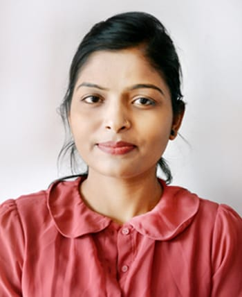

Afreen Ansari

Summary
To work in a challenging environment, utilizing all my skills, knowledge and efforts to the best of my ability to
explore myself in various fields and realize my potential where I can get an opportunity of continuous learning
Qualifaction
- B.E (Computer Technology) from R.C.E.R.T Chandrapur,Maharashtra with 88.50%
- Higher secondary from Lokmanya Tilak Jr. Colleg Maharashtra
State Board with 61.17%
- SSC from St.Michael English School Maharashtra State Board with 75.64%
Achievements
- I was the college topper in my graduation level
- Represented the class at college level National Level Collegiate Event Blitzkrieg-2015 held on 16th February 2015.
- Pixsnap Event of “INFLORE-2K15” ON 25th and 26th of February 2015.
- App Designing Event of “INFLORE-2K15” on 25th and 26th February.
Skills
- Operating System: Windows
- Well knowledge in html css and javascript
Academic Project
- Mini Project:Duplicate File remover
- Mega Project:E-Book Library
Others
My Hobbies
My Contact